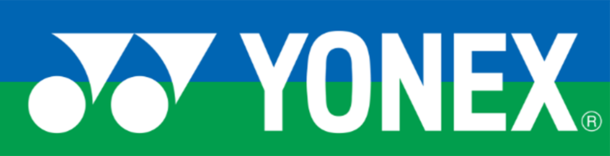
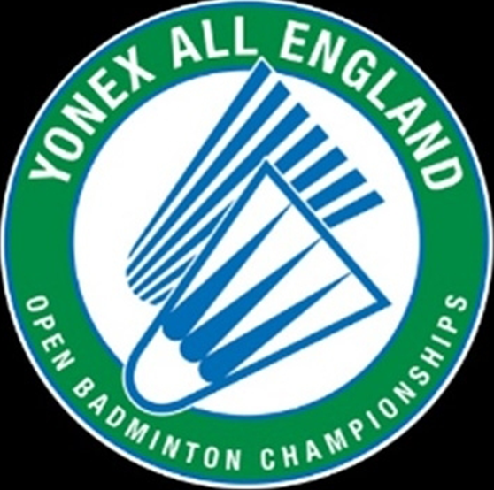
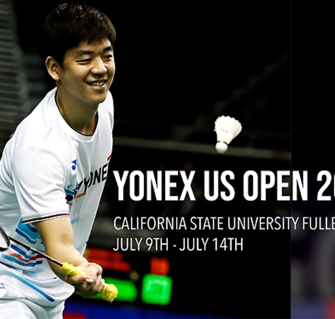
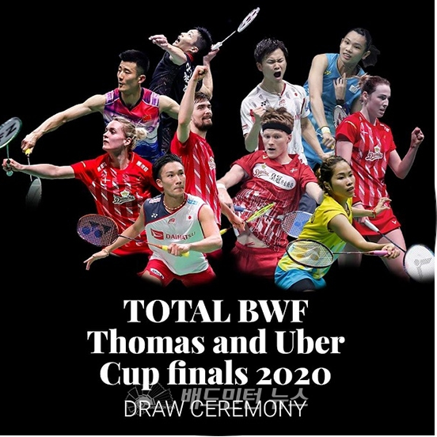
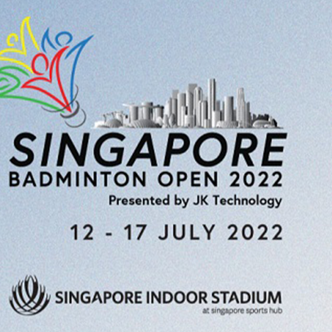
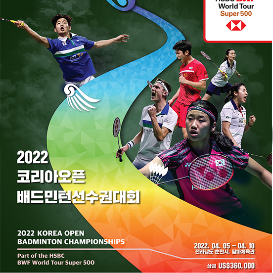

브랜드소개
best product “ 독창적인 기술과 최고의 제품으로 세계에 공헌하겠습니다 ” 
역사&기술
역사 & 기술 1946년 설립되어 1957년부터 본격적인 배드민턴 라켓 개발 및 제조를 시작한 후 배드민턴 산업에서 독보적인 위치를 점하고 있으며 이후 테니스,골프,스노우보드 산업에서도 글로벌 리더로 성장해왔습니다. 시대가 변화해도 요넥스는 독창적인 기술과 최고의 제품으로 세계에 공헌한다라는 경영 이념 아래 항상 도전을 거듭하고 최선을 다하고 있습니다
자유
자유 요넥스 로고 블루 & 그린의 블루는 하늘, 그린은 대지를 상징합니다. 푸른 하늘과 푸른 잔디가 모인 완벽한 스포츠무대로 스포츠가 자연스럽게 번창할 수 있는 광대한 경기장을 뜻합니다. 요넥스 로고는 스포츠에 몰입할 때 누리는 자유의 느낌을 상징합니다. 우리의 로고 블루 & 그린은 인종, 언어, 외모에 상관없이 스포츠 참여에 대한 이점과 만족감뿐 아니라 스포츠의 경이로움에 대한 메시지를 전합니다. 그리고 요넥스의 블루 & 그린 디자인 속에는 스포츠에 대한 우리의 열정과 사랑 헌신이 담겨있습니다
후원국제대회
“ 유수의 국제대회와 세계 톱 플레이어들의 선택, 요넥스! ”- 
- 
- 
- 
- 